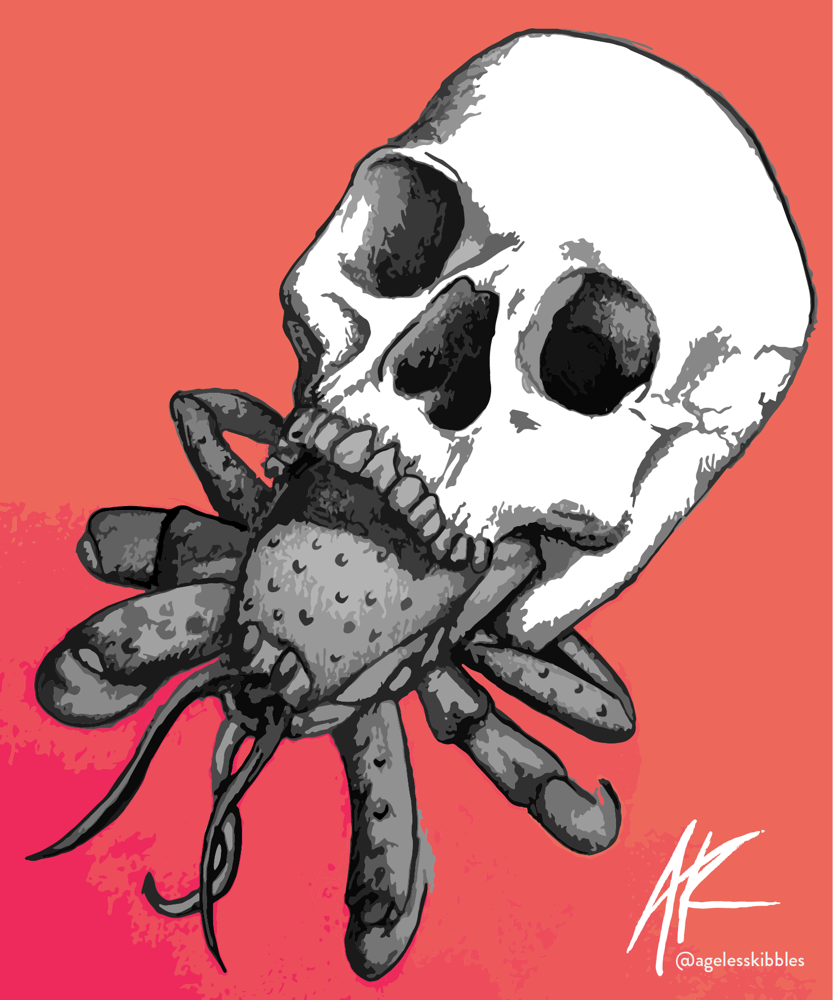

Gonk Droid
This project was a personal study in robots and getting to know my software better. It was also a challenge/test for myself to demonstrate my knowledge of the software I wanted to be using.
I also wanted to experiment with robots, which is something I don't usually use in my artwork, so it was in a sense a technical challenge for myself.
The Gonk Droid was completed in Autodesk Maya, each of the details were separate objects, as I wanted to be able to begin a low poly model and expand to a high quality model. This emulates the
type of models used in game development. I create each of my models in low poly at first to have a usable model for game development as it is my focus. After completing the low poly I fleshed out the model into a higher
quality model for the final render.
Rendering and texturing was completed in substance painter.
1 / 5

2 / 5

3 / 5

4 / 5

5 / 5

❮
❯